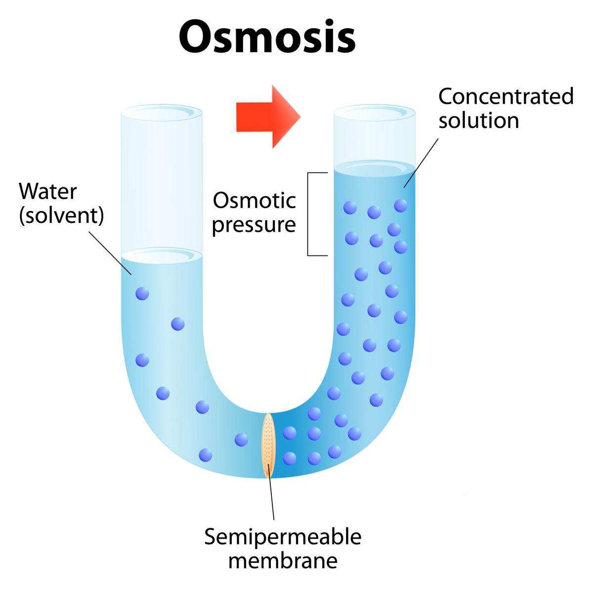

ออสโมซิส (Osmosis) คือการเคลื่อนที่ของตัวทำละลาย (Solvent) หรือน้ำผ่านเยื่อเลือกผ่านที่มีคุณสมบัติในการยอมให้สารบางชนิดผ่านได้เท่านั้น กระบวนการออสโมซิสจะมีทิศทางการเคลื่อนที่จากบริเวณที่สารละลายมีความเข้มข้นต่ำไปยังบริเวณที่สารละลายมีความเข้มข้นสูง โดยมีแรงดันที่เกิดจากกระบวนการดังกล่าวเรียกว่า “ความดันออสโมซิส” (Osmotic Pressure) ซึ่งขึ้นอยู่กับความเข้มข้นของสารละลาย หากสารละลายมีความเข้มข้นสูง จะส่งผลให้เกิดความดันออสโมซิสที่สูงขึ้นตามไปด้วย ขณะที่ภายในเซลล์จะเกิด “ความดันเต่ง” (Turgor Pressure) ขึ้นจากการเคลื่อนที่หรือการออสโมซิสเข้ามาของน้ำ ซึ่งเมื่อความดันเต่งถึงจุดสูงสุด กระบวนการออสโมซิสจะถูกหยุดยั้งลง เนื่องจากเซลล์ไม่สามารถรับสสารหรือน้ำเข้ามาเพิ่มได้อีกแล้ว กระบวนการออสโมซิสที่สามารถพบเห็นได้ในชีวิตประจำวัน เช่น การแช่ผักในน้ำ และการดูดน้ำเข้าสู่รากพืช เป็นต้น
